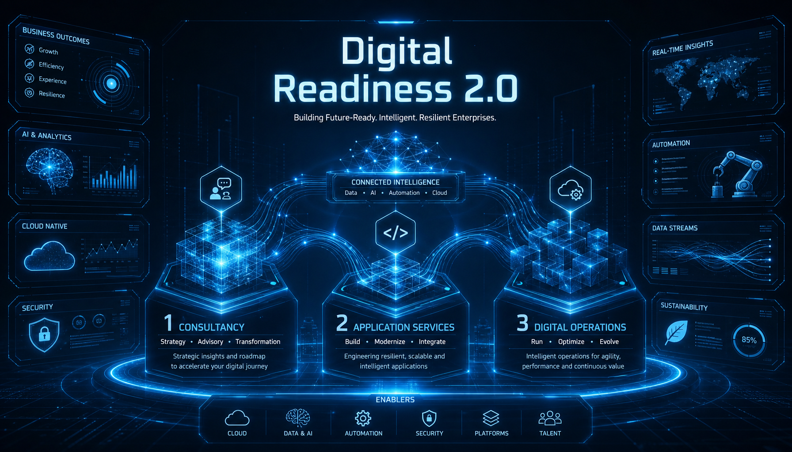

About Us
Helping enterprises reimagine their businesses for the digital age We are a next-generation technology and consulting company leveraging Artificial Intelligence and modern digital solutions to drive innovation, efficiency, and growth.
Our Story
JKS Soft Tech enables global enterprises to transform their businesses via Digital Foundation — a modernised infrastructure stack built on hybrid cloud, software-defined networks, the digital workplace, and the other elements that make up a genuinely digital business.
Through our co-innovation labs and delivery capabilities spanning two countries, we deliver holistic services across industry verticals to leading enterprises, including names within the Fortune 500 of the Global 2000.
What We Do
We play a key role in business transformation, hybrid workplace strategy, and technology implementation, delivering solutions that create real impact.
Our delivery teams combine experience, flexibility, quality, and cost efficiency to provide consistently strong outcomes for our clients.
We collaborate with forward-thinking organisations to design and deliver tailored solutions that address unique business challenges.
Powered by strong technology capabilities and exceptional talent, we stay ahead through an employee-first culture that empowers people to go beyond expectations and deliver lasting value.

Our Philosophy
Our consultancy capabilities, application services, and digital operations work together as the backbone of our three business units — helping enterprises navigate the digital age with ease.
It's the core of our Digital Readiness 2.0 focus: offering holistic services that meet a client's present technology needs, while preparing them to be future-ready.
Our Culture
Behind our technology capabilities are some of the world's finest technology talent — driven by a hallmark "employee-first" philosophy that brings the future to our customers.
Our culture encourages employees to deliver value to customers beyond contractual obligations. A mature framework of policies, processes, and tools empowers our people, rather than simply managing them.
What this means for clients
Let's Talk
Reach out and a person on the delivery bench will get back to you directly.
Get in Touch